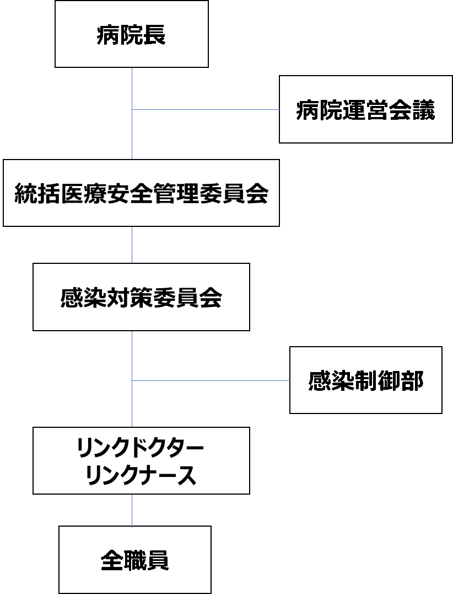

Ⅰ.大阪大学医学部附属病院における医療関連感染対策のための指針
医療関連感染対策に関する基本的考え方
大阪大学医学部附属病院は、わが国の医学における診療、教育及び研究の発展に貢献するとともに、特定機能病院としての高度先進医療・未来医療の開発・実践を担い、同時に安全な医療を実現する使命を負っている。安全な医療の実現のためには医療関連感染対策の推進が不可欠であるとの認識を持ち、職員の一人ひとり、そして各部局それぞれが、医療関連感染対策の推進に真摯に取り組むと同時に、病院全体が包括的に医療関連感染対策を行っていくものとする。また新型コロナウイルス感染症の流行により新興感染症対策の重要性が広く認識されるようになっており、当院も新たな新興感染症が出現した際には、大阪府の要請に基づき患者を受け入れ、新興感染症対策の地域の基幹病院となることが求められている。
このような医療関連感染対策・新興感染症対策を通して、患者本位の安心・安全な全人的医療を提供することのできる環境を整えるように努力し、その活動を基盤として、社会や地域医療にも貢献することが大阪大学医学部附属病院の使命である。
医療関連感染対策に関する組織的な取り組み

大阪大学医学部附属病院における医療関連感染対策は、病院長のもとに感染対策委員会を設け、また感染対策を円滑に運営するために感染制御部を設置する。感染制御部の活動は、ICT(インフェクションコントロールチーム)とAST（抗菌薬適正使用推進チーム）の２つのチームから構成されている。感染制御部の設置と目的
感染制御部の目的は、
①感染症治療の構築
②医療関連感染の予防
③医療者の健康と安全の確保 を体系化して組織的に推進することである。
医療関連感染対策の対象者
病院の全構成員が対象になる。つまり、患者および家族、職員、学生（研究生、大学院生、医学科学生、保健学科学生）、ボランティア、委託業者（給食、清掃、廃棄物など）である。
医療関連感染対策の内容
- ICT（インフェクションコントロールチーム）活動
- 職員への教育・啓発活動
・全職員、全職種を対象とした医療関連感染対策講習会を年2回開催する。
・当院の現状と対策や新しい情報などを提示し、職種に応じて研修会を開催する。
・研修医、新採用者看護師については関連部署と連携を取り、教育を実施する。
・各部署における医療関連感染対策に関する勉強会を支援する。
・病院ボランティアおよび委託業者に対して医療関連感染対策研修会を年２回程度開催する。
・ニュースレター「ICT Information アイアイ」を月に1回発行する。
・研修の実施内容（開催もしくは受講日時、出席者、研修項目）について記録する。
- サーベイランス
1）薬剤耐性菌サーベイランス
耐性菌の発生を把握し、医療関連感染の予防と早期発見に努め、感染防止対策の改善に努める。また、まとめたレポートは感染対策委員会で報告する。
- 侵襲処置・医療器具関連感染サーベイランス
感染リスクの高い部署において、カテーテル関連尿路感染（CA-UTI）、カテーテル関連血流感染（CLABSI）、人工呼吸器関連イベント（VAE）、手術部位感染（SSI）などに関するサーベイランスを実施し、感染防止技術の向上に努める。
- コンサルテーション
・感染症治療に関する相談を受け、治療体系を確立する。
・感染拡大防止の具体的な対策について相談を受ける。
- 職業感染対策
1）体液曝露防止と発生後対策
エピネット（EPINet）日本語版によるデータ収集を行い、分析し、当院の現状に即した体液曝露防止に努めるとともに、検査部、事務と連携し、受診が必要なケースの体液曝露後の職員へ受診を促している。
2）結核
結核の発生があった場合、患者の隔離などについて速やかに対応し、保健所と連携し接触者検診の実施を行い二次発症の早期発見と予防に努める。
- ワクチンプログラムの推進
医療従事者の抗体検査とワクチン接種の徹底をはかり、必要に応じてボランティアや委託業者などに対しても実施する。
- アウトブレイク時の院内体制の確立
アウトブレイク発生時は速やかに原因を究明するための疫学的調査を行い、対策を講じる。
- マニュアルの編纂
当院の現状に即したマニュアルを整備し、必要に応じて見直しを行う。
- 院内環境の整備
・担当事務との連携を図り、院内の清掃の徹底を図る。
・院内での改修工事の際は施設係と連絡を取り合い可能な限りの感染対策を講じる。
・安全でコストを意識した廃棄物処理について担当事務と連携し取り組む。
- 地域連携
保健所および医師会等と連携し、地域における感染対策および他の医療施設、高齢者施設における院内感染対策を協力して推進する。
- 院外への情報公開
ホームページ上に本指針および当院のマニュアルを公開し、あわせて院内感染対策に関する情報の公開を適宜行い、院外の医療施設や市民へ情報提供を行う。
- AST（抗菌薬適正使用支援チーム）活動
- 感染症治療の早期モニタリングと主治医へのフィードバック
特定抗菌薬の使用状況、血液培養陽性患者のモニタリングを行い、抗菌薬の適正使用について主治医へフィードバックを行う。
- 微生物検査・臨床検査の利用の適正化
血液培養陽性患者のモニタリング、MRSAやESBL産生菌などの薬剤耐性菌の新規検出のモニタリングを毎日行い、抗菌薬の適正使用や医療関連感染対策について病棟スタッフと協議する。
- 抗菌薬適正使用に係る評価
・広域抗菌薬であるカルバペネム系抗菌薬・TAZ/PIPC、抗MRSA薬の初回オーダー時「特定抗菌薬使用届」が入力され、開始の通知が感染制御部に届くことで広域抗菌薬と抗MRSA薬の処方状況を把握する。
・広域抗菌薬、抗MRSA薬の使用開始7日目に適正使用であるか否かを電子カルテ上で確認する。介入が必要と判断される症例については主治医に連絡を取り、抗菌薬の継続、変更もしくは中止についてのアドバイスを行う。内容は必要に応じてカルテ記載をする。
・細菌学的検査の結果が判明した症例について検査技師と医師の間で協議し、必要があれば抗菌薬の継続、変更もしくは中止についてのアドバイスを行う。内容は必要に応じてカルテ記載をする。
- 抗菌薬適正使用の教育、啓発
上記（1）〜（3）で、実臨床の現場での適正使用の啓発を行うとともに、年に2回抗菌薬適正使用に関する院内研修を行う。
- 院内採用抗菌薬の見直し
院内採用抗菌薬を適正使用の観点から定期的に見直しを行う。適正使用や新規発売薬は、その必要性を元に採用の可否を判断する。
- 他の医療機関からの相談応需
地域の中核病院として、他の医療機関における感染対策の相談に応じ、必要であれば介入も行う。
医療関連感染の定義
昨今の医療サービスの多様化により、病院に留まらず、外来、在宅環境も含め、医療に起因した感染のことを医療関連感染としている。